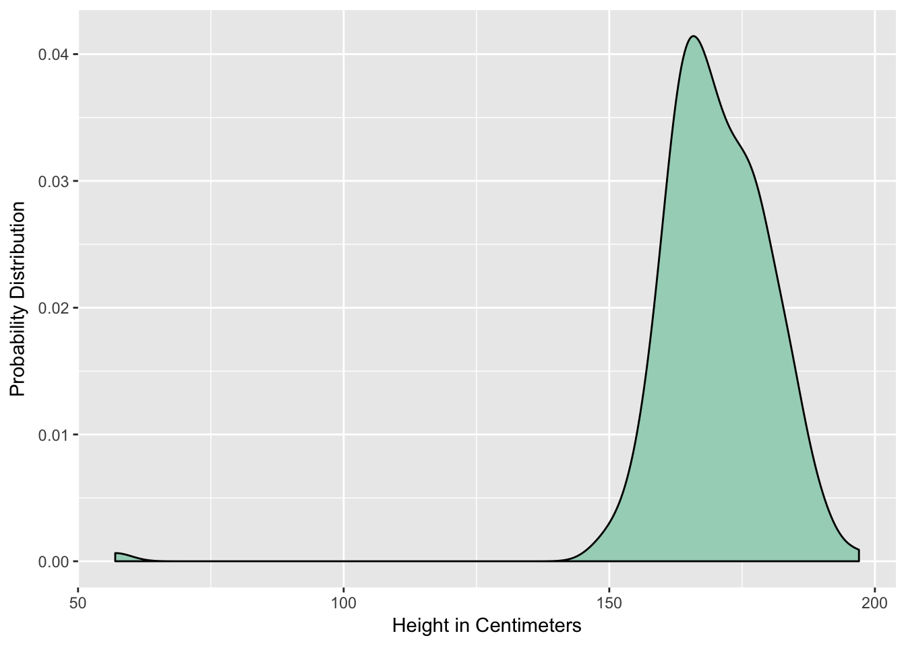
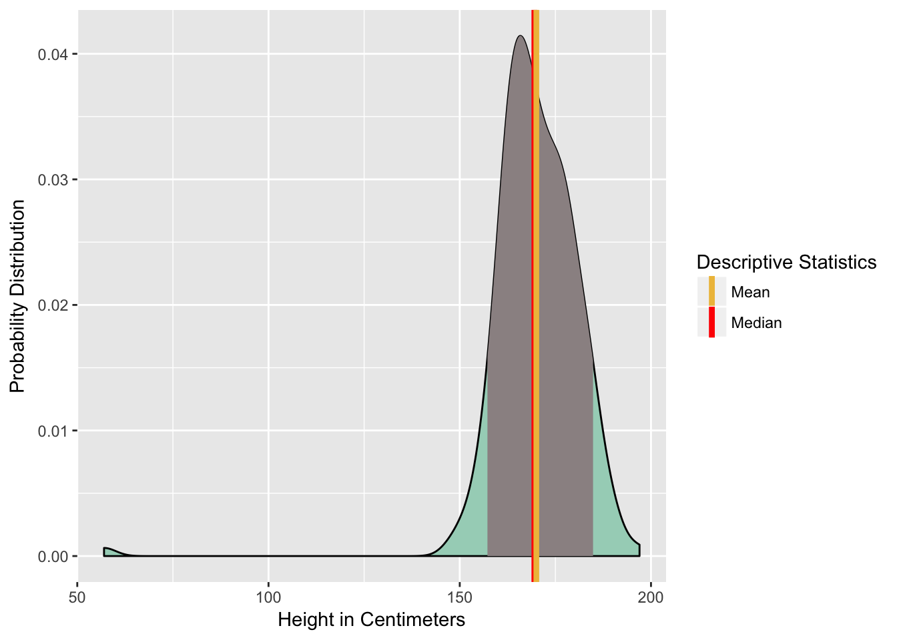
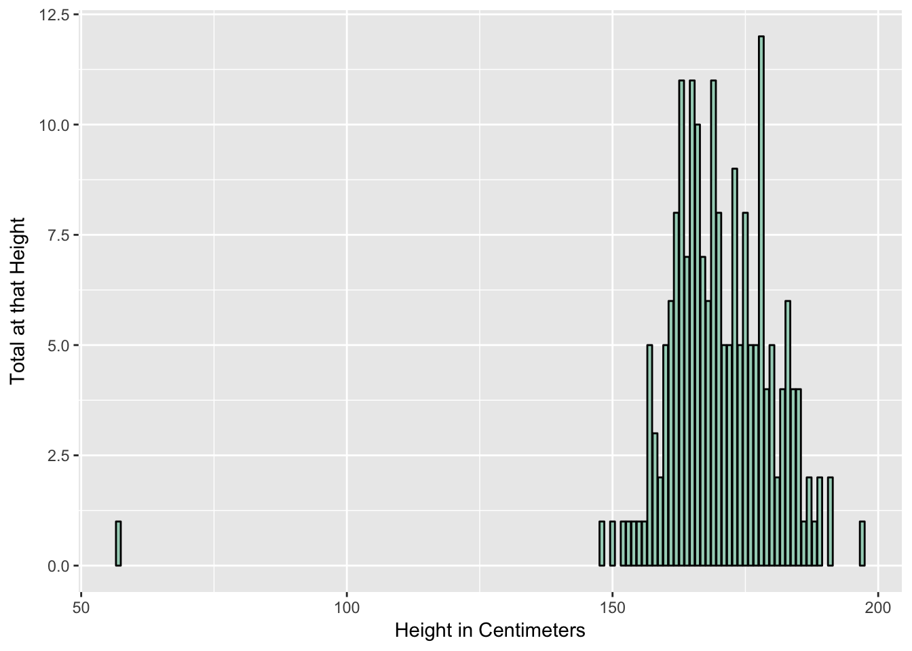
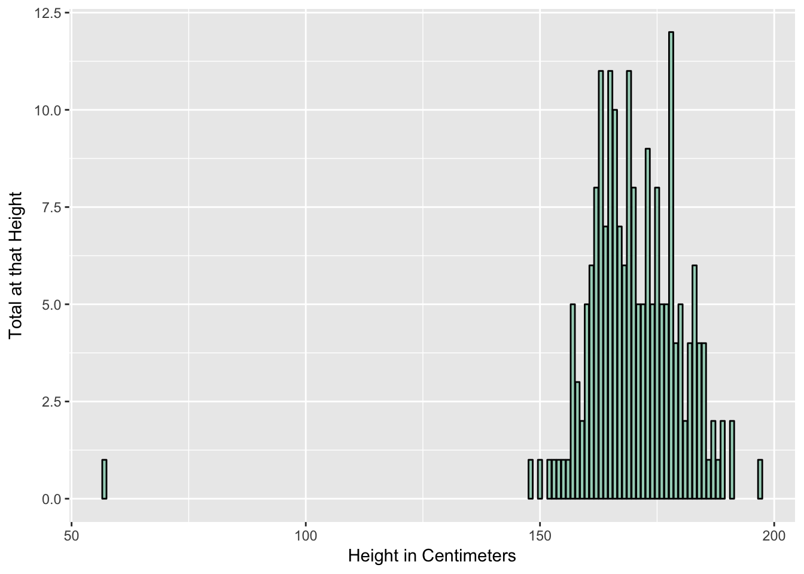

Expectations

What do you want to learn today?
06-25-18
What do you want to learn today?

What questions do you have about data?
Bro-map
Data: Facts, figures, and other abstract representations of the world
Information: Data that has been processed, given structure, and context
“Descriptive statistics are brief descriptive coefficients that summarize a given data set, which can be either a representation of the entire or sample population. Descriptive statistics are broken down into measures of central tendency and measures of variability (spread).”



| Average Height | Median Height | Shortest | Tallest | Standard Deviation, in Centimeters |
|---|---|---|---|---|
| 170.02 | 169.5 | 57 | 197 | 12.00794 |
 

| sex | Average Height | Median Height | Shortest | Tallest | Count | Standard Deviation |
|---|---|---|---|---|---|---|
| F | 163.7411 | 165 | 57 | 178 | 112 | 11.643925 |
| M | 178.0114 | 178 | 163 | 197 | 88 | 6.440701 |
The previous chart and graph will be on a single slide
Be back in 10!

Regression: Beyond Our Scope
As difficult as finding…

Thanks Hadley!
Made up data: Also a handout.
Thank You